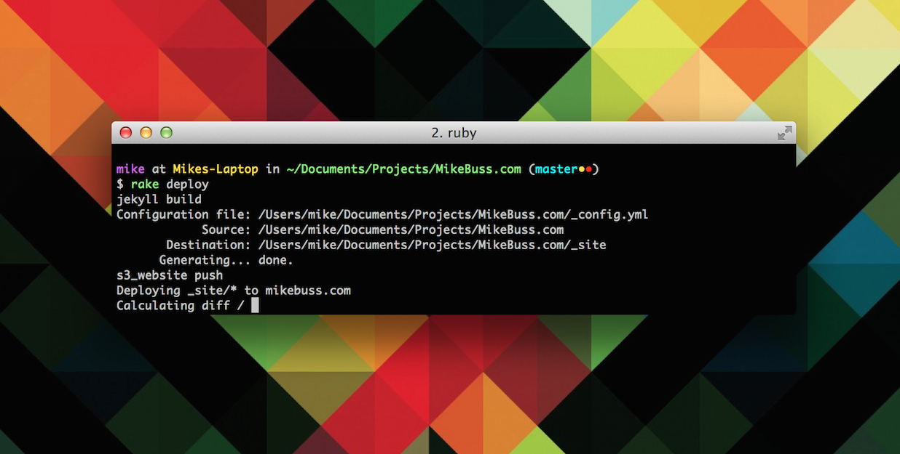
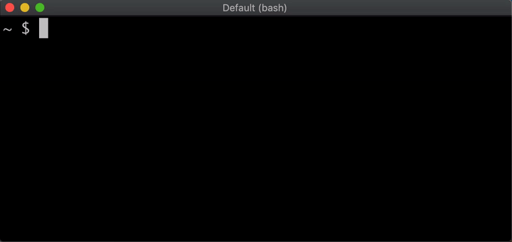
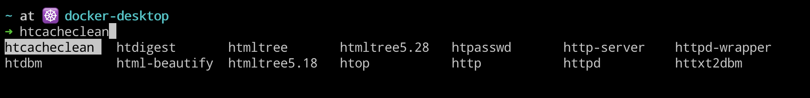

Bash 上的自动补全极为适合于写一些基于命令行的小程序

1. 自动补全工具
主要讲述自动补全命令的用处
- 我们日常在使用
bash命令行的时候，常常会在提示符下输入某个命令的前面几个字符， 然后使用TAB键，之后命令行就会列出以这几个字符开头的命令。这时，我们就可以根据实际情况进行选择使用了。 同时，不仅可以补全命令，而且还可以进行参数补全，但只限于文件参数。当输入到参数部分时，按TAB键就会列出以这个参数开头的文件路径供我们选择。在bash中内置提供了一个complete命令，用来规定参数的自动补全方式，我们这里主要就是对其进行讲解和说明。
# 可以看出complete命令是内置命令
ci@f9539272e3df:/opt$ type complete
complete is a shell builtin
- 在我们学习自动补签的技巧之前，首先需要学习
complete命令的基本参数已经使用方式，该命令是自动补全的基石。
# complete命令的帮助信息
ci@f9539272e3df:/opt$ complete --help
complete: complete [-abcdefgjksuv] [-pr] [-DE] [-o option] [-A action] [-G globpat] [-W wordlist] [-F function] [-C command] [-X filterpat] [-P prefix] [-S suffix] [name ...]
Specify how arguments are to be completed by Readline.
For each NAME, specify how arguments are to be completed. If no options
are supplied, existing completion specifications are printed in a way that
allows them to be reused as input.
Options:
-p print existing completion specifications in a reusable format
-r remove a completion specification for each NAME, or, if no
NAMEs are supplied, all completion specifications
-D apply the completions and actions as the default for commands
without any specific completion defined
-E apply the completions and actions to "empty" commands --
completion attempted on a blank line
When completion is attempted, the actions are applied in the order the
uppercase-letter options are listed above. The -D option takes
precedence over -E.
Exit Status:
Returns success unless an invalid option is supplied or an error occurs.
| 编号 | 内置 complete 命令参数 | 参数作用解释 |
|---|---|---|
| 1 | -W wordlist |
指定候选的单词列表 |
| 2 | -F function |
指定一个补全函数 |
| 3 | -o comp-option |
内置多种参数类型 |
| 4 | -A action |
内置多种参数类型 |
# 使用函数来匹配完成自动补全(man complete)
ci@f9539272e3df:/opt$ complete
complete -F _longopt ls
complete -F _longopt tail
complete -F _service /etc/init.d/rsyslog
complete -F _service /etc/init.d/hwclock.sh
complete -o filenames -F _grub_set_entry grub-reboot
complete -o filenames -F _grub_mkconfig grub-mkconfig
complete -u w
complete -u slay
complete -c type
complete -c which
complete -v unset
complete -A setopt set
complete -A helptopic help
complete -b builtin
complete -j -P '"%' -S '"' fg
bash-completion这个包的安装位置因不同的发行版会有所区别，但是大致上启用的原理是类似的，一般会有一个名为bash_completion的脚本，这个脚本会在shell初始化时加载。对于Ubuntu的操作系统来说，这个脚本位于/usr/share/bash-completion/bash_completion，而该脚本会由/etc/profile.d/bash_completion.sh中导入。
# /etc/profile.d/bash_completion.sh
ci@f9539272e3df:/opt$ cat /etc/profile.d/bash_completion.sh
# Check for interactive bash and that we haven't already been sourced.
[ -z "$BASH_VERSION" -o -z "$PS1" -o -n "$BASH_COMPLETION_COMPAT_DIR" ] && return
# Check for recent enough version of bash.
bash=${BASH_VERSION%.*}; bmajor=${bash%.*}; bminor=${bash#*.}
if [ $bmajor -gt 4 ] || [ $bmajor -eq 4 -a $bminor -ge 1 ]; then
[ -r "${XDG_CONFIG_HOME:-$HOME/.config}/bash_completion" ] && \
. "${XDG_CONFIG_HOME:-$HOME/.config}/bash_completion"
if shopt -q progcomp && [ -r /usr/share/bash-completion/bash_completion ]; then
# Source completion code.
. /usr/share/bash-completion/bash_completion
fi
fi
unset bash bmajor bminor
- 而在
bash_completion脚本中会加载/etc/bash_completion.d下面的补全脚本。
if [[ $BASH_COMPLETION_DIR != $BASH_COMPLETION_COMPAT_DIR && \
-d $BASH_COMPLETION_DIR && -r $BASH_COMPLETION_DIR && \
-x $BASH_COMPLETION_DIR ]]; then
for i in $(LC_ALL=C command ls "$BASH_COMPLETION_DIR"); do
i=$BASH_COMPLETION_DIR/$i
[[ ${i##*/} != @(*~|*.bak|*.swp|\#*\#|*.dpkg*|*.rpm@(orig|new|save)|Makefile*) \
&& -f $i && -r $i ]] && . "$i"
done
fi
unset i
2. 内置补全命令
命都没了，还提什么被打扰？

Bash有compgen和complete两个内置补全命令。
| 编号 | 内置补全命令 | 命令作用解释 |
|---|---|---|
| 1 | compgen |
根据不同的参数生成匹配单词的候选补全列表 |
| 2 | complete |
在命令行中根据不用的前缀补全对应参数候选补全列表 |

- 其中
compgen命令会根据不同的参数生成匹配单词的候选补全列表，最常用的选项是-W参数，通过-W参数指定以空格分隔的单词列表。从下面例子中输入h单词后输出候选的匹配列表。
# 配置以h开头的单词
ci@f9539272e3df:/opt$ compgen -W 'hi hello how world' h
hi
hello
how
# 配置以w开头的单词
ci@f9539272e3df:/opt$ compgen -W 'hi hello how world' w
world
complete命令的有点类似compgen命令，不过它的作用是说明命令如何进行补全。例如使用-W参数指定候选的单词列表，还可以通过-F参数指定一个补全函数。
# 设置候选参数
ci@f9539272e3df:/opt$ complete -W 'word1 word2 word3 hello' foo
# Tab补全
ci@f9539272e3df:/opt$ foo <TAB><TAB>
hello word1 word2 word3
ci@f9539272e3df:/opt$ foo word<Tab>
word1 word2 word3
3. 补全内置变量
内置变量在编写脚本时常常会被使用到
除了上面两个补全命令以外，Bash 还有几个内置的变量用来辅助补全功能，我们这里主要介绍其中三个。
| 编号 | 内置变量 | 变量作用解释 |
|---|---|---|
| 1 | COMP_WORDS |
类型为数组；存放当前命令行中输入的所有单词 |
| 2 | COMP_CWORD |
类型为整数；当前光标下输入的单词位于 COMP_WORDS 数组中的索引 |
| 3 | COMP_LINE |
类型为字符串；表示当前的命令行输入 |
| 4 | COMP_WORDBREAKS |
类型为字符串；表示单词之间的分隔符 |
| 5 | COMPREPLY |
类型为数组；候选的补全结果 |
# 定义一个补全函数(_foo)
function _foo() {
declare -p COMP_WORDS
declare -p COMP_CWORD
declare -p COMP_LINE
declare -p COMP_WORDBREAKS
}
# 设置命令补全(foo)
complete -F _foo foo
# 理解这几个变量的含义
$ foo b<TAB>
declare -a COMP_WORDS='([0]="foo" [1]="b")'
declare -- COMP_CWORD="1"
declare -- COMP_LINE="foo b"
declare -- COMP_WORDBREAKS="
\"'@><=;|&(:"
4. 编写补全脚本
光说不练假把式
编写一个自动补全的脚本或者说是一个自动补全的工具，主要分为两个部分，即编写一个补全函数和使用 complete 命令应用补全函数。使用 complete 命令非常简单，主要的难点在于补全函数的编写，这里我们可以借鉴 bash-completion 自带的一些补全脚本来学习，理解之后，基本就是改吧改吧就可以使用了。
- 一般补全函数都会定义
cur和prev这两个变量，其中cur表示当前光标下的单词，而prev则表示对应上一个单词。初始化相应的变量之后，我们需要定义命令的补全行为，即输入什么的情况下补全什么内容。例如，当输入-开头的选项的时候，我们将所有的选项作为候选的补全结果。需要注意的是给COMPREPLY赋值之前，最好将它重置清空，避免被其它补全函数干扰。
# /etc/bash_completion.d/fcoemon
have fcoemon && _fcoemon_options() {
local cur prev prev_prev opts
COMPREPLY=()
cur="${COMP_WORDS[COMP_CWORD]}"
prev="${COMP_WORDS[COMP_CWORD-1]}"
opts="-f --foreground -d --debug -s --syslog -v --version -h --help"
case "${cur}" in
*)
COMPREPLY=( $(compgen -W "${opts}" -- ${cur}) )
return 0
;;
esac
return 0
}
complete -F _fcoemon_options fcoemon
# 自动补齐
ci@f9539272e3df:/opt$ fcoemon -<TAB>
-d --debug -f
- 心思的你可能会发现，似乎我们这里的例子没有用到
prev变量。用好prev变量可以让补全的结果更加完整，例如当我们输入--file之后，我们希望补全特殊的文件，例如以.sh 结尾的文件。
# 自己构建的一个自动补全的函数
_foo() {
local cur prev prev_prev opts
COMPREPLY=()
cur="${COMP_WORDS[COMP_CWORD]}"
prev="${COMP_WORDS[COMP_CWORD-1]}"
opts="-f --foreground -d --debug -s --syslog -v --version -h --help"
case "${prev}" in
-f|--file)
COMPREPLY=( $(compgen -o filenames -W "`ls *.sh`" -- ${cur}) )
return 0
;;
esac
return 0
}
complete -F _fcoemon_options fcoemon
# 自动补齐
$ foo --file<Tab>
a.sh b.sh c.sh
5. 补全使用方式
即编写好脚本之后如何使之生效
- 现在很多
Linux下的命令工具都可以使用自带的工具生成对应补全脚本，我们只需要在启动或执行对应的脚本，即可实现该命令行工具的自动补签，比如kubectl工具等。
# 生成bash对应的自动补签脚本
$ kubectl completion bash
# 一种做法是写入~/.bashrc文件
$ source < (kubectl completion bash)
# 另一种做法是bash_completion.d目录中
$ kubectl completion bash > /etc/bash_completion.d/kubectl
# 生成zsh对应的自动补签脚本
$ kubectl completion zsh
# 一种做法是写入~/.zshrc文件
$ source < (kubectl completion zsh)
# 必须启用compdef内置功能(~/.zshrc文件)
autoload -Uz compinit
compinit
- 从上面的命令我们肯定很疑问，为什么自动补全
Bash和Zsh的脚本会要区别呢？主要是因为Bash和Zsh的自动补全实现细节不同，当然不同的操作系统对应的脚本也是有差异的。在Bash的自动补全主要依赖于bash-completion项目，而Zsh的自动补全脚本没有任何依赖项，所以不需要安装其他工具。
# CentOS
$ sudo yum install bash-completion
# Ubuntu
$ sudo apt-get install bash-completion
6. 使用实例展示
官方实例和有趣的脚本
- [1] Real-World
_revdep_rebuild() {
local cur prev opts
COMPREPLY=()
cur="${COMP_WORDS[COMP_CWORD]}"
prev="${COMP_WORDS[COMP_CWORD-1]}"
opts="-X --package-names --soname --soname-regexp -q --quiet"
if [[ ${cur} == -* || ${COMP_CWORD} -eq 1 ]] || \
[[ ${prev} == @(-q|--quiet) ]] ; then
COMPREPLY=( $(compgen -W "${opts}" -- ${cur}) )
return 0
fi
case "${prev}" in
-X|--package-names)
_pkgname -I ${cur}
;;
--soname)
local sonames=$(for x in /lib/*.so?(.)* /usr/lib*/*.so\?(.)* ; do \
echo ${x##*/} ; \
done)
COMPREPLY=( $(compgen -W "${sonames}" -- ${cur}) )
;;
--soname-regexp)
COMPREPLY=()
;;
*)
if [[ ${COMP_LINE} == *" "@(-X|--package-names)* ]] ; then
_pkgname -I ${cur}
COMPREPLY=(${COMPREPLY[@]} $(compgen -W "${opts}"))
else
COMPREPLY=($(compgen -W "${opts} -- ${cur}"))
fi
;;
esac
}
complete -F _revdep_rebuild revdep-rebuild
- [2] FizzBuzz
function _fizzbuzz () {
length=${#COMP_WORDS[@]}
number=$((length - 1))
if ! ((number % 15)); then
COMPREPLY=(fizzbuzz)
elif ! ((number % 3)); then
COMPREPLY=(fizz)
elif ! ((number % 5)); then
COMPREPLY=(buzz)
else
COMPREPLY=($number)
fi
}
complete -F _fizzbuzz fizzbuzz
- [3] redefine_filedir
_filedir() {
local i IFS=$'\n' xspec
_tilde "$cur" || return 0
local -a toks
local quoted x tmp
_quote_readline_by_ref "$cur" quoted
x=$( compgen -d -- "$quoted" ) &&
while read -r tmp; do
toks+=( "$tmp" )
done <<< "$x"
if [[ "$1" != -d ]]; then
# Munge xspec to contain uppercase version too
# http://thread.gmane.org/gmane.comp.shells.bash.bugs/15294/focus=15306
xspec=${1:+"!*.@($1|${1^^})"}
x=$( compgen -f -X "$xspec" -- $quoted ) &&
while read -r tmp; do
toks+=( "$tmp" )
done <<< "$x"
fi
# If the filter failed to produce anything, try without it if configured to
[[ -n ${COMP_FILEDIR_FALLBACK:-} && \
-n "$1" && "$1" != -d && ${#toks[@]} -lt 1 ]] && \
x=$( compgen -f -- $quoted ) &&
while read -r tmp; do
toks+=( "$tmp" )
done <<< "$x"
if [[ ${#toks[@]} -ne 0 ]]; then
# 2>/dev/null for direct invocation, e.g. in the _filedir unit test
compopt -o filenames 2>/dev/null
COMPREPLY+=( "${toks[@]}" )
fi
}
_filedir()
7. 参考链接地址
授人玫瑰，手有余香！
我们要写一个命令行的客户端，支持对命令进行自动补全。我们不会从头开始写这个命令行客户端的输入输出，而是选择使用 IPython 和 mycli/pgcli 都用的一个库 prompt_toolkit。它是用了 Python 的正则表达式的 named group 功能，用正则表达式来验证用户输入的命令是否合法，从输入的内容中抓出来 token，然后对这些 token 进行自动补全。随着开发和支持的命令越来越多，这个正则表达式已经膨胀到几百行了，编译速度也令人难以忍受。这就很恐怖了！
解决方法就是即时编译，既然启动的时候编译那么多正则表达式很慢，那么我为什么要一开始就全部编译好呢？用到哪一个再编译哪一个不就好了吗？这样，当用户输入了一个命令参数的时候，即时编译该参数的对应正则表达式，然后进行匹配。如果命令参数比较复杂的时候，会感觉到一点卡顿，可以加个一个装饰器 @lru_cache，将编译结果直接缓存下来，这样只在第一次输入的时候会卡，后面就好多了。
import math
from prompt_toolkit import prompt
from prompt_toolkit.completion import WordCompleter
from prompt_toolkit.contrib.regular_languages.compiler import compile
from prompt_toolkit.contrib.regular_languages.completion import GrammarCompleter
from prompt_toolkit.contrib.regular_languages.lexer import GrammarLexer
from prompt_toolkit.lexers import SimpleLexer
from prompt_toolkit.styles import Style
operators1 = ["add", "sub", "div", "mul"]
operators2 = ["cos", "sin"]
def create_grammar():
return compile(
r"""
(\s* (?P<operator1>[a-z]+) \s+ (?P<var1>[0-9.]+) \s+ (?P<var2>[0-9.]+) \s*) |
(\s* (?P<operator2>[a-z]+) \s+ (?P<var1>[0-9.]+) \s*)
"""
)
example_style = Style.from_dict(
{
"operator": "#33aa33 bold",
"number": "#ff0000 bold",
"trailing-input": "bg:#662222 #ffffff",
}
)
if __name__ == "__main__":
g = create_grammar()
lexer = GrammarLexer(
g,
lexers={
"operator1": SimpleLexer("class:operator"),
"operator2": SimpleLexer("class:operator"),
"var1": SimpleLexer("class:number"),
"var2": SimpleLexer("class:number"),
},
)
completer = GrammarCompleter(
g,
{
"operator1": WordCompleter(operators1),
"operator2": WordCompleter(operators2),
},
)
try:
# REPL loop.
while True:
# Read input and parse the result.
text = prompt(
"Calculate: ", lexer=lexer, completer=completer, style=example_style
)
m = g.match(text)
if m:
vars = m.variables()
else:
print("Invalid command\n")
continue
print(vars)
if vars.get("operator1") or vars.get("operator2"):
try:
var1 = float(vars.get("var1", 0))
var2 = float(vars.get("var2", 0))
except ValueError:
print("Invalid command (2)\n")
continue
# Turn the operator string into a function.
operator = {
"add": (lambda a, b: a + b),
"sub": (lambda a, b: a - b),
"mul": (lambda a, b: a * b),
"div": (lambda a, b: a / b),
"sin": (lambda a, b: math.sin(a)),
"cos": (lambda a, b: math.cos(a)),
}[vars.get("operator1") or vars.get("operator2")]
# Execute and print the result.
print("Result: %s\n" % (operator(var1, var2)))
elif vars.get("operator2"):
print("Operator 2")
except EOFError:
pass